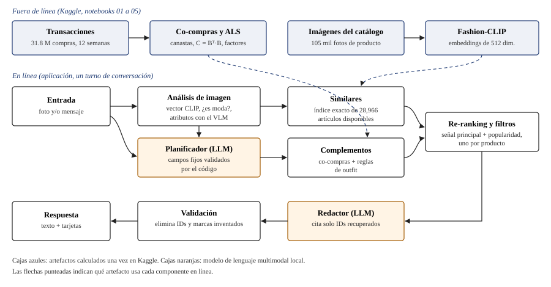
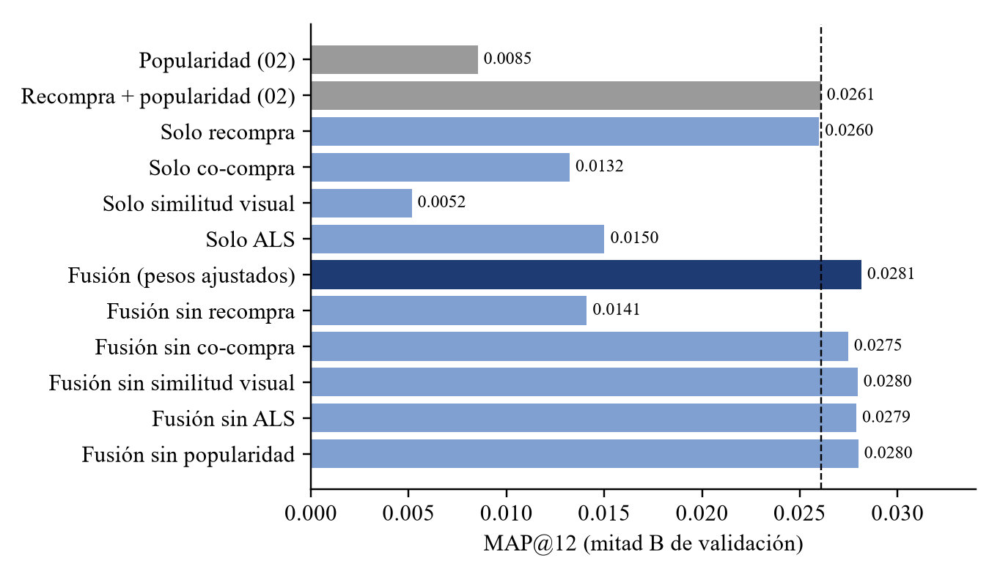
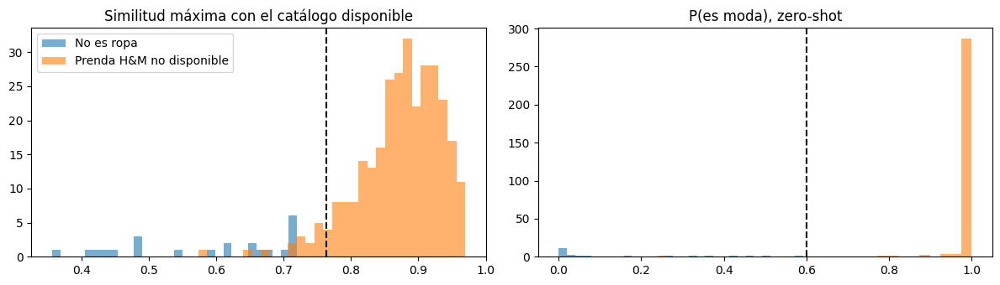
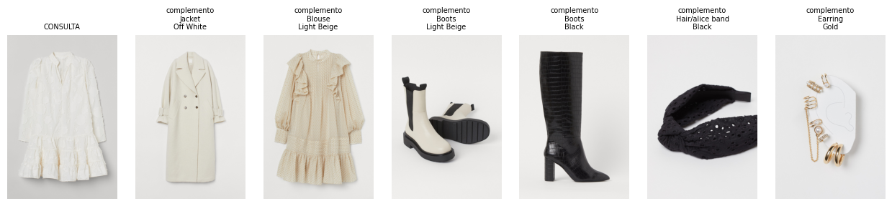
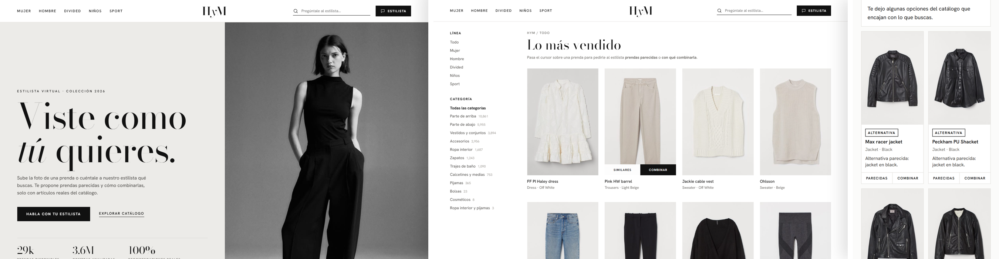

Datos Masivos · Instituto de Investigaciones en Matemáticas Aplicadas y en Sistemas (IIMAS), UNAM
Presentamos HyM, un estilista virtual que recibe la foto de una prenda, un mensaje en lenguaje natural o ambos, y responde con prendas del catálogo de H&M parecidas a la que el usuario busca y con otras que combinan con ella. El sistema une tres componentes. Los embeddings multimodales de Fashion-CLIP permiten buscar por imagen y por texto en un mismo espacio. El filtrado colaborativo sobre 31.8 millones de transacciones aporta la señal de qué prendas se compran juntas. Por último, una capa de generación aumentada por recuperación (RAG) usa un modelo de lenguaje multimodal para interpretar la petición y redactar la respuesta, citando únicamente artículos que fueron recuperados del catálogo. En la tarea de predecir las compras de la semana siguiente, la fusión de señales alcanza un MAP@12 de 0.0281, un 7.7 % por encima del mejor baseline. En un conjunto fijo de conversaciones de prueba, el 97 % de los artículos mostrados cumple lo que pidió el usuario y ninguno es inventado. El sistema completo corre en una laptop con un modelo de lenguaje local, sin depender de servicios externos.
Los sistemas de recomendación de moda suelen resolver una tarea concreta, que es predecir qué va a comprar cada cliente a partir de su historial. Así está planteada, por ejemplo, la competencia H&M Personalized Fashion Recommendations [7]. Sin embargo, una persona que busca ropa normalmente no piensa en su historial sino en una prenda que ya tiene o que vio en algún lado, y quiere saber qué hay parecido o con qué combinarla. Esa pregunta se responde mejor con una conversación que con una lista fija de recomendaciones.
Los modelos de lenguaje actuales hacen posible esa conversación, pero por sí solos tienen un problema importante para un catálogo real, ya que tienden a inventar productos, marcas o características que no existen. Por eso en este proyecto el modelo de lenguaje no decide qué recomendar. Su papel es entender lo que pide el usuario y explicar los resultados, mientras que la selección de prendas la hacen componentes que sí se pueden medir, como la similitud visual y las compras reales.
Las contribuciones del trabajo son las siguientes.
Representaciones multimodales. CLIP [1] entrena un codificador de imágenes y uno de texto para que una foto y su descripción queden cerca en el mismo espacio vectorial. Fashion-CLIP [2] ajusta ese modelo con unos 800 mil productos de moda y mejora la búsqueda de prendas por texto. Como los vectores están normalizados, buscar prendas parecidas se reduce a un producto punto, que puede resolverse de forma exacta o aproximada con bibliotecas como FAISS [8].
Filtrado colaborativo. Con retroalimentación implícita, como las compras, el método ALS de Hu, Koren y Volinsky [3]
factoriza la matriz de clientes por artículos y es la base de la biblioteca implicit [10]. Antes de
factorizar es común ponderar la matriz con BM25 [5], que reduce el peso de los artículos que compra casi todo el mundo.
Para relacionar
artículos entre sí, el enfoque artículo a artículo de Amazon [4] cuenta cuántas veces se compran juntos. En la competencia de
H&M [7] los enfoques más simples, como recomendar lo que el cliente ya compró y lo más vendido, resultaron difíciles de
superar, y por eso los usamos como referencia.
Generación aumentada por recuperación. RAG [6] condiciona la respuesta de un modelo de lenguaje a documentos recuperados, lo que reduce las respuestas inventadas. En nuestro caso los documentos son fichas de producto y el modelo es multimodal, de la familia Qwen [9, 11], así que también puede describir la imagen que sube el usuario.
Usamos el dataset público de la competencia de H&M [7], que contiene 105,542 artículos con sus metadatos y fotos, 1.37 millones de clientes y 31.8 millones de transacciones entre septiembre de 2018 y septiembre de 2020. Solo 442 artículos no tienen imagen y la única columna con datos faltantes es la descripción. Para cada artículo construimos un texto que une nombre, tipo de prenda, color, apariencia, sección y descripción.
La partición es temporal, ya que la última semana de transacciones (240 mil compras de 68,984 clientes) queda como validación y todo lo anterior como entrenamiento. Separar por fecha evita que el modelo vea compras del futuro. Para trabajar con rapidez, los experimentos usan las últimas 12 semanas de entrenamiento, que suman 3.66 millones de transacciones. Como el dataset no incluye inventario, definimos el catálogo disponible como los artículos con imagen que se vendieron en las últimas cuatro semanas de entrenamiento. Son 28,966 artículos y cubren cerca del 96 % de las compras de validación, por lo que todas las recomendaciones salen de ese conjunto.
La Figura 1 resume el sistema. La parte fuera de línea se calcula una sola vez en Kaggle y produce los embeddings, la tabla de co-compras y los factores de ALS. La parte en línea atiende cada turno de la conversación y es la que corre en la aplicación.

Calculamos con Fashion-CLIP (ViT-B/32) un vector de 512 dimensiones para la imagen y otro para el texto de cada artículo. Las fotos de H&M son verticales, así que en lugar de recortarlas las rellenamos con blanco hasta hacerlas cuadradas, para no cortar la prenda. Los 105,100 embeddings de imagen tardan unos 13 minutos en una GPU T4. Como índice usamos directamente la matriz de embeddings y una búsqueda exacta por producto punto, que con este tamaño responde en unos 20 milisegundos. Un índice aproximado no se justifica con poco más de cien mil vectores.
El dataset no tiene sesiones de compra, por lo tanto definimos una canasta como las compras de un cliente en un mismo día y descartamos las de más de 30 artículos, que suelen ser de revendedores. Con la matriz binaria B de canastas por artículos, la matriz de co-compras es C = BTB, donde Cij cuenta las canastas que contienen a la vez los artículos i y j. Consideramos que j complementa a i si pertenece a otro grupo de producto y a la misma línea (mujer, hombre, niños), y guardamos los 50 mejores complementos de cada artículo. Para las prendas sin co-compras usamos como respaldo los artículos más vendidos de los grupos complementarios.
Para predecir las compras de un cliente generamos candidatos con cinco señales, que son recompra, co-compra con sus últimas compras, similitud visual con ellas, ALS y popularidad. Como sus escalas no son comparables, cada señal xk se normaliza entre 0 y 1 dentro de cada cliente, y el puntaje final es
s(u, i) = Σk wk · x̂k(u, i).
Los pesos wk se ajustan por ascenso por coordenadas sobre una mitad de los clientes de validación, y los resultados se reportan sobre la otra mitad.
En el chat el punto de partida no es un cliente sino una consulta. Cada turno sigue cinco pasos.
Esta división de trabajo es la decisión de diseño más importante del proyecto. El modelo de lenguaje aporta comprensión del lenguaje y redacción, pero nunca elige por su cuenta qué artículo mostrar.
Los notebooks se ejecutan en Kaggle mediante su interfaz de línea de comandos, de modo que los datos pesados nunca salen de la plataforma. El código del chat está en un módulo de Python que comparten los notebooks y la aplicación. Para la evaluación en Kaggle usamos el modelo Qwen2.5-VL de 7B [9] servido con Ollama en una GPU T4. La aplicación final es un servidor FastAPI con una interfaz web propia y corre en una laptop con procesador AMD Ryzen AI Max+ 392 y 64 GB de memoria unificada. Ahí el modelo de lenguaje es Qwen3.6-35B-A3B [11], un modelo de mezcla de expertos con capacidad de visión servido localmente con Lemonade, y Fashion-CLIP corre en el procesador. Todo lo que necesita la aplicación cabe en un paquete de 494 MB con los metadatos, los embeddings, los complementos y miniaturas de las 28,966 prendas disponibles.
La Tabla 1 compara los baselines con la fusión de señales sobre la mitad de los clientes que no se usó para ajustar los pesos. La fusión obtiene el mejor MAP@12 y el mejor recall@12. La mejora sobre la recompra con popularidad es de 7.7 % en MAP@12 y de 15 % en recall@12.
Tabla 1. Predicción de compras de la semana de validación (34,492 clientes de la mitad B).
| Método | MAP@12 | Recall@12 |
|---|---|---|
| Popularidad de la última semana | 0.0085 | 0.0253 |
| Solo similitud visual | 0.0052 | 0.0165 |
| Solo co-compra | 0.0132 | 0.0350 |
| Solo ALS | 0.0150 | 0.0373 |
| Recompra + popularidad (mejor baseline) | 0.0261 | 0.0529 |
| Fusión con pesos ajustados | 0.0281 | 0.0610 |
El análisis de ablación de la Figura 2 muestra que la recompra es la señal dominante, ya que al quitarla el MAP@12 cae a 0.0141. La siguiente en importancia es la co-compra. La similitud visual casi no cambia el MAP@12, lo cual era de esperarse, porque predecir recompras no es su función. Su valor aparece en el chat, donde la consulta es una prenda nueva y no el historial del cliente. También medimos el techo de esta etapa, que es la fracción de compras reales que quedó entre los candidatos. Fue de 11.7 % para los clientes con historial, lo que acota cuánto puede mejorar cualquier ajuste de pesos.

Para evaluar los embeddings usamos los metadatos como referencia. Para 2,000 artículos al azar medimos qué fracción de sus 10 vecinos más cercanos comparte el tipo de prenda y el color, sin contar variantes del mismo producto. La Tabla 2 muestra que la búsqueda de texto a imagen, que es la que usa el chat, acierta el tipo y el color en el 88 % de los casos, frente a menos del 10 % al azar. De imagen a imagen el tipo coincide en el 73 %, ya que prendas muy parecidas pueden tener etiquetas distintas, como un suéter y un cárdigan.
Tabla 2. Fracción de los 10 vecinos que comparte tipo de prenda y color con la consulta.
| Búsqueda | Tipo@10 | Color@10 | Tipo y color@10 |
|---|---|---|---|
| Imagen a imagen | 0.728 | 0.457 | 0.333 |
| Texto a texto | 0.842 | 0.814 | 0.685 |
| Texto a imagen (30 consultas) | 0.877 | 0.883 | n/d |
| Azar | 0.047 | 0.082 | 0.005 |
Evaluamos los complementos con las canastas reales de la semana de validación. Para cada artículo de una canasta medimos qué fracción de los demás artículos de esa canasta aparece entre sus 12 complementos. Como muestra la Tabla 3, el conteo directo de co-compras supera a la popularidad y a la similitud coseno, y el respaldo para prendas sin historial sube un poco el recall al cubrir el 100 % del catálogo con imagen.
Tabla 3. Recall@12 de co-compras reales en la semana de validación.
| Método | Complementos | General |
|---|---|---|
| Popularidad del mismo grupo | 0.0754 | 0.0220 |
| Co-compra, similitud coseno | 0.0755 | 0.0966 |
| Co-compra, conteo directo | 0.1034 | 0.1174 |
| Conteo directo con respaldo de arranque en frío | 0.1053 | n/d |
Calibración. Para fijar los umbrales de los casos límite comparamos 300 prendas reales de H&M fuera del catálogo disponible con imágenes que no son ropa (Figura 3). La probabilidad de moda separa los dos grupos con 99.7 % de exactitud usando un umbral de 0.6. La similitud máxima con el catálogo sirve para avisar cuando una prenda no tiene un equivalente cercano, con un umbral de 0.763.

Atributos de la imagen. Sobre 30 artículos al azar, el modelo multimodal de 7B identificó el tipo de prenda en el 67 % de los casos y el color en el 60 %, valores cercanos a los de la votación de vecinos visuales (73 % y 57 %). Reconoció como no moda el 100 % de las imágenes que no son ropa, aunque marcó como no moda 2 de 30 prendas, ambas de ropa interior. Por eso la decisión final combina al modelo con Fashion-CLIP.
Conversaciones. Definimos un conjunto fijo de seis escenarios con doce turnos, que incluye búsquedas con foto y con texto, refinamientos como "en negro", "más formal" y "en otro color", una consulta ambigua, una imagen que no es ropa y un intento de que el modelo rompa sus reglas pidiendo un identificador inventado y una marca ajena. Para cada turno escribimos lo que debe cumplirse, por ejemplo que todos los artículos sean vestidos negros, y lo verificamos de forma automática. La Tabla 4 resume los resultados.
Tabla 4. Evaluación automática del chat (12 turnos, Qwen2.5-VL 7B).
| Métrica | Resultado |
|---|---|
| Artículos que cumplen la petición (promedio por turno) | 97.2 % |
| Turnos que cumplen al 100 % | 11 de 12 |
| Complementos que no son básicos (ropa interior, calcetines, pijamas) | 100 % |
| Artículos inventados mostrados al usuario | 0 |
| Casos límite resueltos (aclaración, no es moda, ID y marca inexistentes) | 3 de 3 |
El único turno incompleto fue "¿y unos zapatos cafés que combinen?", con 67 %, porque las co-compras contienen pocos zapatos cafés de hombre y parte de la lista se completó con otros colores. La Figura 4 muestra un ejemplo con la foto de un vestido, para el que el sistema propone un abrigo, una blusa, dos pares de botas, una diadema y aretes, todos tomados de compras reales y filtrados por las reglas de outfit.

En la evaluación sobre una GPU T4, un turno completo tarda en promedio 9.8 segundos. Casi todo ese tiempo corresponde al modelo de lenguaje, ya que la redacción toma 8.0 segundos y el análisis de la imagen 3.9, mientras que la recuperación de similares, complementos y el re-ranking suman menos de 0.2 segundos. En el procesador de la laptop, sin contar el modelo de lenguaje, un turno con imagen tarda entre 0.2 y 0.35 segundos. Por lo tanto la velocidad de la aplicación depende sobre todo del modelo que se use para conversar.

Los resultados muestran que en este dataset la recompra explica la mayor parte de lo que se puede predecir, y que las señales de contenido como la similitud visual aportan poco a esa métrica. Esto no significa que no sirvan, sino que MAP@12 no mide la tarea del chat. Por eso evaluamos la capa conversacional con un protocolo propio, centrado en que lo mostrado cumpla la petición y exista en el catálogo.
La co-compra refleja hábitos reales pero no garantiza coherencia de estilo, ya que la gente también compra junto lo que no se pone junto. Las reglas de outfit corrigen los casos más evidentes, aunque no sustituyen a un modelo que aprenda la compatibilidad entre prendas. Además, los umbrales se calibraron con fotos de producto con fondo blanco, y una foto tomada con celular produce similitudes menores, por lo que el aviso de prenda fuera de catálogo aparece con más frecuencia. El catálogo corresponde a H&M en 2020 y no incluye tallas, precios ni inventario. Finalmente, el conjunto de conversaciones es pequeño y una evaluación con usuarios reales daría una medida más completa de la utilidad del sistema.
HyM muestra que es posible construir un estilista conversacional que no inventa productos, siempre que el modelo de lenguaje se limite a interpretar y redactar y la selección de prendas quede en manos de componentes medibles. La fusión de recompra, co-compras, ALS y similitud visual supera al mejor baseline en la predicción de compras, la búsqueda multimodal acierta tipo y color en cerca del 88 % de los casos y el chat cumple la petición del usuario en el 97 % de los artículos que muestra, todo en una aplicación que corre de forma local. Como trabajo futuro proponemos entrenar un re-ranker con más variables, aprender la compatibilidad entre prendas para armar outfits completos y evaluar el sistema con usuarios.
[1] A. Radford, J. W. Kim, C. Hallacy et al. Learning transferable visual models from natural language supervision. ICML, 2021.
[2] P. J. Chia, G. Attanasio, F. Bianchi et al. Contrastive language and vision learning of general fashion concepts. Scientific Reports, 12, 18958, 2022.
[3] Y. Hu, Y. Koren y C. Volinsky. Collaborative filtering for implicit feedback datasets. IEEE ICDM, 2008.
[4] G. Linden, B. Smith y J. York. Amazon.com recommendations. Item-to-item collaborative filtering. IEEE Internet Computing, 7(1), 2003.
[5] S. Robertson y H. Zaragoza. The probabilistic relevance framework. BM25 and beyond. Foundations and Trends in Information Retrieval, 3(4), 2009.
[6] P. Lewis, E. Perez, A. Piktus et al. Retrieval-augmented generation for knowledge-intensive NLP tasks. NeurIPS, 2020.
[7] H&M Group. H&M Personalized Fashion Recommendations. Competencia de Kaggle, 2022.
[8] J. Johnson, M. Douze y H. Jégou. Billion-scale similarity search with GPUs. IEEE Transactions on Big Data, 2019.
[9] S. Bai et al. Qwen2.5-VL technical report. arXiv:2502.13923, 2025.
[10] B. Frederickson. implicit. Fast Python collaborative filtering for implicit datasets. GitHub, 2017.
[11] Qwen Team. Qwen3 technical report. arXiv:2505.09388, 2025.